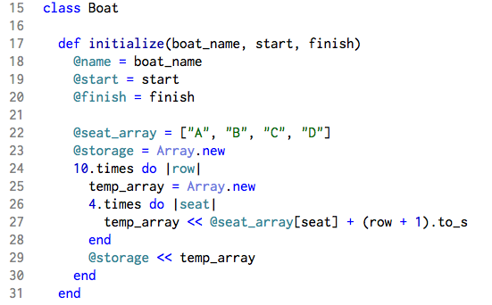
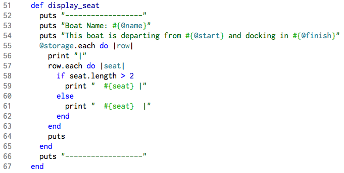
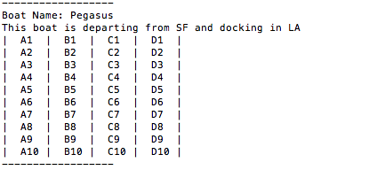
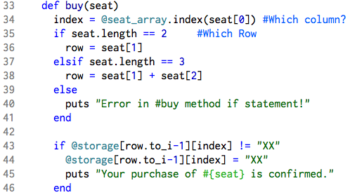
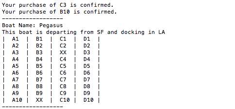

Classes: Baseball and Boats
Technical Blog
August 27th, 2015
Classes are a fundamental object oriented concept. As methods can be described as a verb or action, classes are blueprints to combining a series of these actions to create one type of object. For example, you can calculate specific statistics for a baseball player. You can write a batting_average method that takes the input of a player’s hits and times he has been at bat, and divides them to return that player’s batting average. You can also have methods that similarly calculate slugging percentage, homeruns, stolen bases, etc. The list can go on.
It is easy to see that all these methods are very similar and serve a coordinated purpose of painting a picture of how good a player is. With that in mind, imagine creating one object that stored the complete profile of a player instead of calling methods and inputting data individually. Imagine an object that holds all the data for a player as well as all the methods needed to manipulate the data to present important stats like batting average, ERA, or slugging percentage. An object with a template like that can be applied to almost every baseball player because although everyone is unique, the statistics needed to make a baseball player profile are all similar.
Now lets pick another example to solidify the class concept and all the properties that make it invaluable. Imagine you own a small ferry boat. You want to write an object that has all the methods and data needed to visually display the seating manifest of the boat, input a specific seat that is being purchased, and factor that into the seating manifest to show that the seat has been taken and cannot be sold.
The class’ initialization method runs as soon as the class is created, it expects the inputs of the name of the boat, its starting location, and its landing location. In this example, that information are placed in instance variables. Instance variables are another wonderful feature for classes because they are variables that can be accessed by any method in the class. Without instance variables in classes, one would have to either make one large method that works with already defined smaller methods that do all of this.
Lines 22-29, essentially create an array with sub-arrays of all the seats on the boat. And to make it easy to visually see the seating manifest, this method within the class can be called to display the seating.
The result of this method:
Now, the final method #buy_seat is a great example of how to create a method that then manipulates the instance variables in the class. This will take in a string and will replace the seat with an “X” if it is available. Now, whenever it the seating manifest is displayed it will show that those seats are no longer available.
The result of this method:
In the end, the classes not only make it easier to visualize, manipulate and store data, it is a way to save time by creating a template that can be used over and over again. Imagine, that your ferrying boat is doing so well that you want to expand and create two more boats, named “Success” and “Breeze,” which will ferry from NY to Long Island and LA to Catalina Island respectively. All you have to do is create new classes.
pegasus = Boat.new(“Pegasus”, “SF”, “LA”) ##Original class for the ship Pegasus
success = Boat.new(“Success”, “NY”, “Long Island”) ##New class for the ship Success
breeze = Boat.new(“Breeze”, “LA”, “Catalina”) ##New class fo rhte ship Breeze